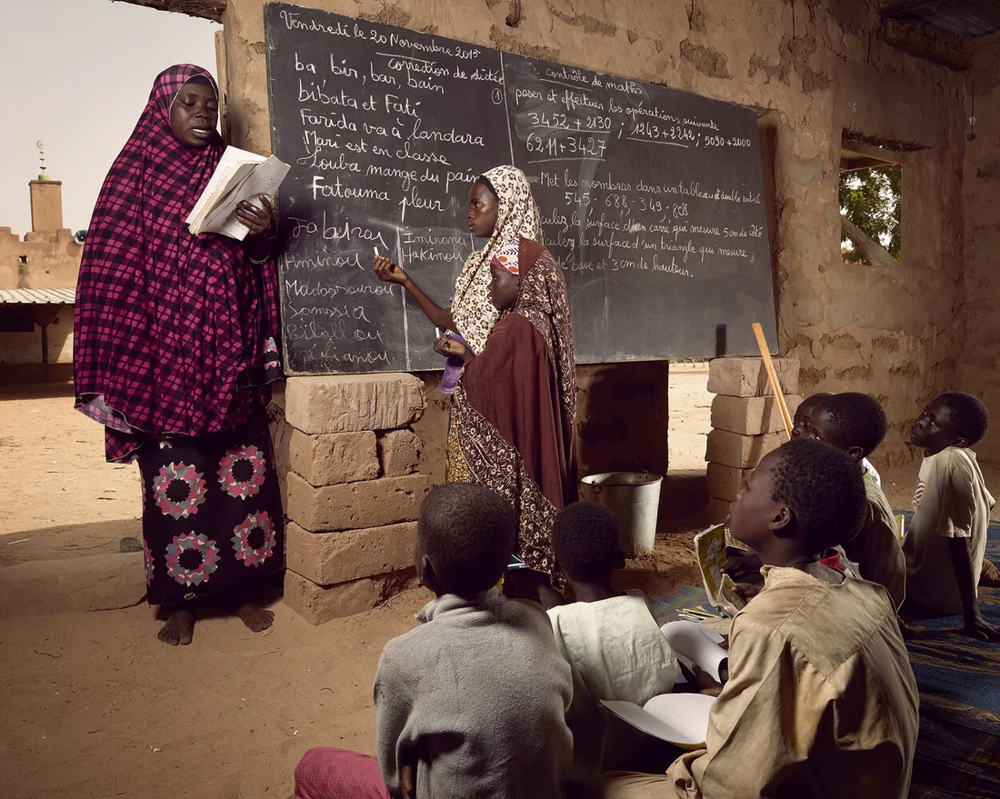
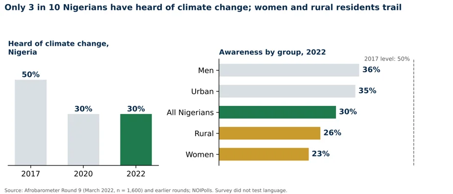
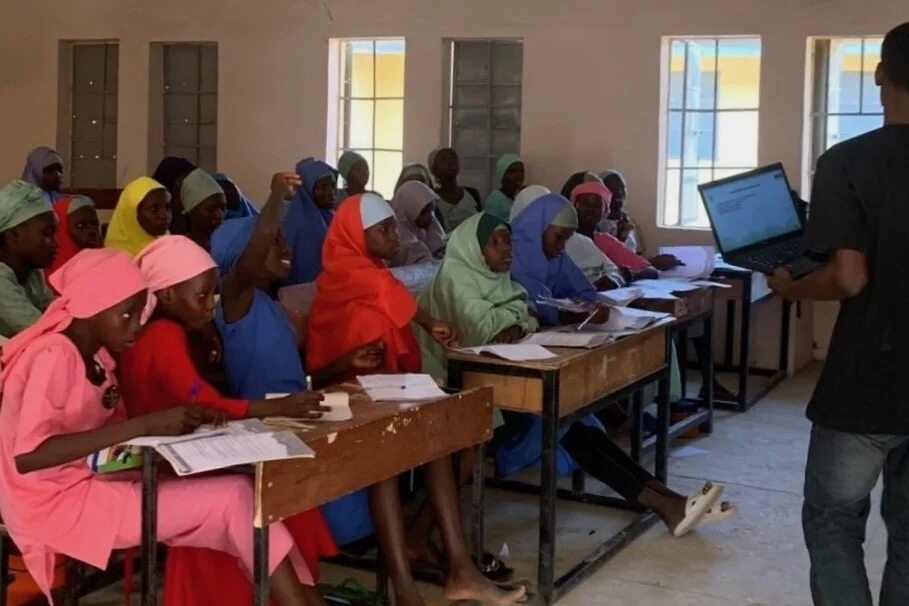

The Problem
The English language currently acts as the most widely used lingua franca for scientific activities worldwide. However, at the local level, there are many scientists and consumers of scientific information, including policymakers, who use languages other than English in their communications. Such a situation automatically results in knowledge barriers between different groups. Nevertheless, the scale of this challenge has not been measured, and further research needs to be conducted on the issue.
Professor Marco Saraceni of the University of Portsmouth highlighted that almost 90% of scientific publications are in English: “This is a staggering dominance of just one language. But English, often called a global language, is only spoken by a minority of the world's population.”
Approximately one to two billion people use the English language. Hence, as stated by Saraceni, “At least three-quarters of the world's population do not speak the language in which climate change science is communicated around the world. At the same time, other languages apart from English remain marginal and fight for recognition within global scientific discourse.” According to a study conducted in 2016, language is the biggest obstacle that prevents the spread of science globally. From the hundred highest-ranked scientific journals, 91 journals are from the UK and the USA. However, the worst effects of the climate change crisis are currently being felt in the developing nations.
In northern Nigeria, this problem creates two tiers: people who can read the science and people who can only live with its consequences.

Why Hausa
Based on Ethnologue estimates, the number of speakers of Hausa as a first language is estimated at around 58 million speakers, and the number of second-language speakers is estimated at 36 million speakers, making the total number of speakers of the language around 94 million. It acts as a lingua franca in northern Nigeria and southern Niger and is used as a trade language in northern Cameroon, Ghana, Benin, Togo, and southern Chad. Hausa is known to have written traditions using the Latin alphabet (Boko) and the Arabic alphabet (Ajami) and was declared an official language of Niger in 2025.

What the Evidence Says
1. An awareness gap, not an attitude gap
In Afrobarometer's 2022 survey, only 30% of Nigerians had heard of climate change, down from 50% in 2017. Awareness was lower among rural residents (26% against 35% in urban areas) and women (23% against 36% of men). Yet among those who were aware, 66% said climate change is making life worse, 69% believed ordinary citizens can help, and 71% wanted immediate government action. Concern is not the missing ingredient; access is. The survey did not test language directly, so this pattern is consistent with, not proof of, a language barrier. Niger, by comparison, recorded 58% awareness.

2. English limits understanding
A study in Jiwa and Barangoni in Abuja's Federal Capital Territory found that English-language climate messages did not produce understanding, because much of the rural population has no English literacy and understands only Hausa and Gbagyi. Earlier reporting republished from IRIN found six in ten farmers interviewed in Godai saying they knew nothing about climate change, even though each household owned a radio, and a local journalist said radio items were often translated from written articles that listeners could not follow.
3. Positive results of language-of-the-area communication
The Hausa and Fulfulde radio series In Kidi ya Chanza had 26 episodes broadcast in Borno, Kano, Kaduna, and Katsina, potentially reaching 20 million people. According to an evaluation based on surveys of 3,000 farmers, 84% of women and 68% of men stated they were more aware of their agricultural problems, and 92.8% of those who became more aware took some actions (self-reported data). Also, more recently, there was a voice advisory service in Hausa serving around 20,000 farmers in northern states, which achieved 97% trust and 99% satisfaction from its audience. The messages were translated into Hausa and field-tested before recording. Although these are the reports of the implementers, they still lead to the same conclusions. Another 2025 study of Hausa and Tiv farm radio in North-Central Nigeria came to the same conclusion.

4. Quality of translation and comprehension gap
Preliminary findings from the ARECCCA project in Africa suggest that translation from English often does not include the local context, causing many rural areas to understand climate change as a change in weather conditions. One study conducted in Ghana, examining the coastal area speaking the Ewe language (Master's thesis), found high levels of threat perception but low technical knowledge without any significant connection to communication.
5. Knowledge flows both ways
The IPCC's Sixth Assessment Report recognises indigenous and local knowledge, and analysis of AR6 notes growing evidence that it strengthens the effectiveness, sustainability, and equity of adaptation. Yet an evidence map of the adaptation literature identified northern and central Africa as gaps, and most IPCC processes run in English, so representatives without strong English often arrange translation themselves. Language shapes who is heard, as well as who is informed.

Policy Analysis
Nigeria has a National Climate Change Policy (2021 to 2030) and a Climate Change Act, and 76% of Nigerians who know about climate change say government holds primary responsibility, while 61% of all adults rate its performance poorly. Budget documents show about ₦200.6 million allocated to climate awareness over four years, yet an Afrobarometer round in 2020 found 65.4% had never heard of climate change. That does not prove language is the cause, but it suggests awareness spending is not reaching rural Hausa-speaking audiences. Accountability requires comprehension: citizens cannot scrutinise, co-design, or claim what they cannot understand.
Recommendations
1. Develop Hausa Climate Terminology
Establish a multidisciplinary panel to develop and validate a standard Hausa climate glossary.
2. Translate Climate Knowledge
Make key climate policies, research findings, and early-warning information accessible in Hausa.
3. Integrate Hausa into Climate Education
Develop Hausa learning resources for schools, universities, and community education programmes.
4. Strengthen Media Engagement
Promote Hausa climate programming through radio, podcasts, digital platforms, and journalist training.
5. Promote Community Participation
Pilot Hausa climate communication in northern communities, incorporating indigenous knowledge and measuring public understanding.
6. Institutionalize and Expand
Integrate Hausa into climate communication strategies and build cross-border partnerships across Hausa-speaking West Africa.
Conclusion
Climate governance depends on people understanding risks, claiming resources, and holding institutions to account. When the language of climate science is not the language of the community, that chain breaks at its first link. Recognising linguistic accessibility as a core component of inclusive climate governance means budgeting for it, measuring it and building it into policy. Hausa, spoken by roughly 94 million people, is the place to start. Climate change may speak English, but climate action must speak Hausa.